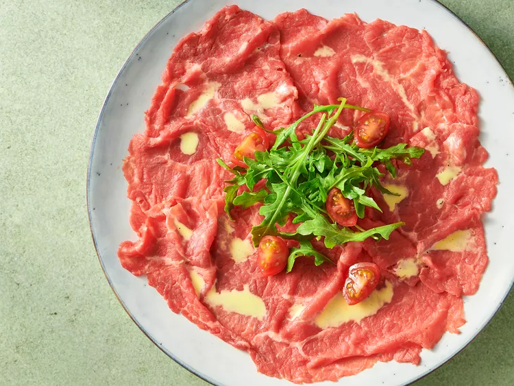

Paper-thin slices of ultra-fresh raw beef garnished with arugula and drizzled with vinaigrette.

Ingredients
1 pound beef tenderloin
One 5-ounce box fresh baby arugula, washed and dried
Kosher salt and freshly ground black pepper
3 tablespoons freshly squeezed juice from about 2 lemons
1 teaspoon Dijon mustard
1 egg yolk
10 small tomatoes cut into quarters to garnish
Preparation
Wrap beef tenderloin in plastic wrap, and chill in freezer for
1 hour. Using a very sharp knife, cut beef across the grain
into 1/8-inch-thick slices. Place slices between sheets of
plastic wrap or wax paper and gently pound with the flat
end of a meat mallet, or roll with a heavy rolling pin
until paper-thin.
Arrange slices on 6 individual chilled plates.
Add arugula to a bowl and toss with 4 tablespoons of
olive oil and season with salt and pepper. Arrange
arugula in a pile in the center of each plate.
Place remaining 4 tablespoons oil, lemon juice, mustard, egg yolk, salt and pepper in a 2-cup measure. Use an immersion
blender or hand blender to mix until thick. Drizzle
mustard sauce around each plate avoiding arugula.
Garnish plates with tomato quarters and serve immediately.